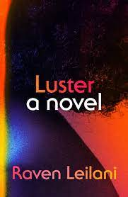

My Latest Reads
 I'm currently reading Luster by Raven Leilani, which follows a Black woman in her twenties who gets involved with a fortysomething white man in an open marriage. So far, I've really been enjoying the way Leilani explores her main character's identity as a somewhat lost Black woman and how that impacts her relationship with society and of course with specific individuals.